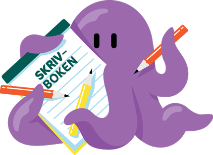

Ett magiskt slott
Ett magiskt slott
"Harry ska påbörja sitt sjätte år på Hogwarts. Han får tag på någon bok som var gjord av "halvblodsprinsen" och i den står det massa konstiga trollformler och drycker. Harry använder boken till några lektioner men Hermione blir misstänksamm och säger till han att sluta. Voldermort är starkare än någonsin och det visar sig att han har flera själar... Denna bok är jätte spännande och så kommer det en twist i slutet som gör så man bara MÅSTE läsa nästa!!"
Skriven av: Alice

www.barnensbibliotek.se